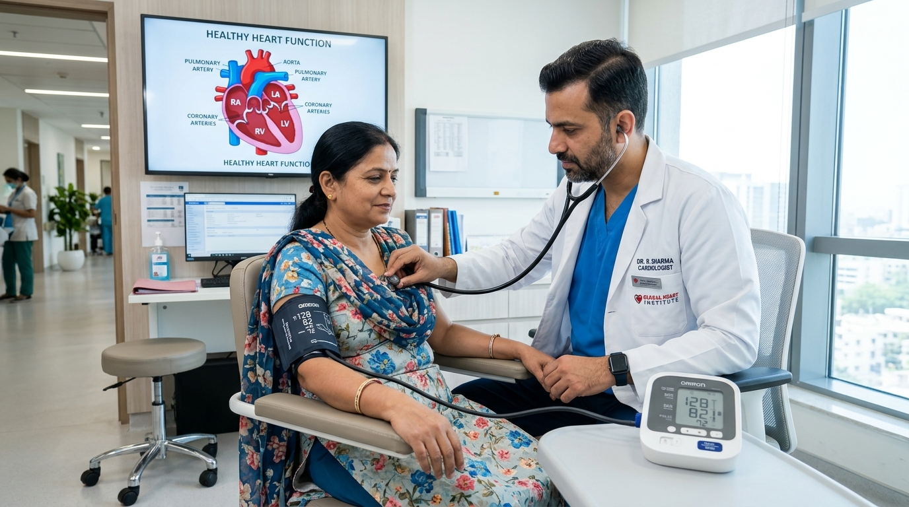

Tips to Maintain a Healthy Heart
Practical, cardiologist-backed strategies to safeguard your cardiovascular system: learn essential dietary adjustments, ideal aerobic exercise intensity, blood pressure targets and early subtle warning signs of heart distress.
Showing 8 health articles
No Matching Articles Found
We couldn't find any health articles matching your criteria. Try adjusting your search keywords or clearing active category filters.